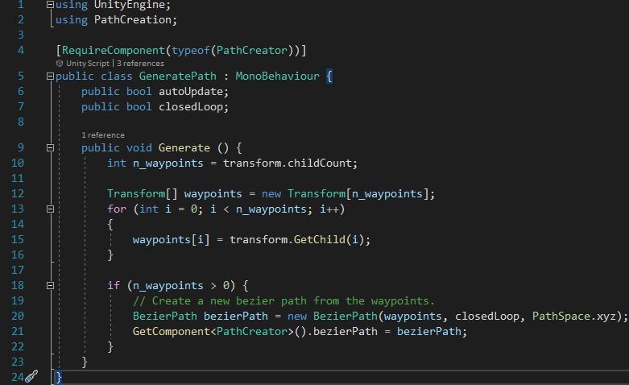
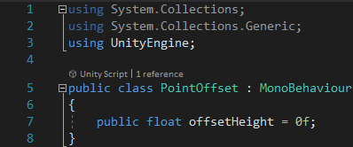

The Path
I wanted the path to go aimlessly around the forest, representing how people often don't know where they're going in life when they rely on others for
a route to follow, or something like that... ¯\_(シ)_/¯

Generate Path
This script generates a path given waypoints I have positioned in the forest using a path creator algorithm by Sebastian Lague.
I recommend watching his videos on it to understand how it works.
I wrote this script to -and so avoided using the nodes attached to the path by default to- position the path, as it allowed me to automatically make the path go up and down with the terrain,
along with the rest of the scripts on this page.
Click the code below to download the C# file:

Ground Waypoints
As mentioned above, this script automatically makes the path go up and down with the terrain. This allowed me to relatively quickly construct a path through the forest.
It also hides the waypoint nodes when the game starts, as they are only supposed to be seen in the Unity Editor.
Click the code below to download the C# file:

Point Offset
This tiny script is attached to each waypoint node, allowing me to adjust it's local height relative to the ground below it. This makes the elevation of the path
either higher or lower at the waypoint, depending on my preference.
Click the code below to download the C# file:

<
Contents:
Click to jump to chapter: